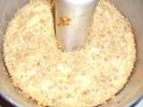

1 stick butter melted 1 cup sugar Combine ingredients 2 eggs Use a little more of a ½ pint of sour cream 1 teaspoon vanilla 2 cups flour 2 teaspoon baking powder 1 teaspoon baking soda ½ teaspoon salt Mix together ½ cup walnuts chopped 1 teaspoon cinnamon 2 teaspoon sugar Flour pan and greese pan Heat oven to 350 cook for 45 mins Put ½ of batter in pan and layer of walnuts then repeat Cook for 45 mins to an hour 1 stick butter melted 1 cup sugar Combine ingredients 2 eggs Use a little more of a ½ pint of sour cream 1 teaspoon vanilla 2 cups flour 2 teaspoon baking powder 1 teaspoon baking soda ½ teaspoon salt Mix together ½ cup walnuts chopped 1 teaspoon cinnamon 2 teaspoon sugar Flour pan and greese pan Heat oven to 350 cook for 45 mins Put ½ of batter in pan and layer of walnuts then repeat Cook for 45 mins to an hour |
|
 |